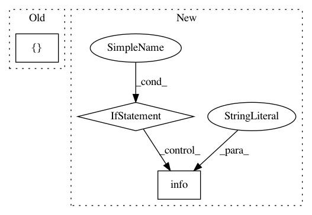

b81b9c2a1eeea4f93a453441baef210dbea63650,deploy/create_project.py,,create_compute_vms,#,387
Before Change
"templates/gce_vms.py")
dm_template_dict = {
"imports": [{"path": path}],
"resources": [{
"type": path,
"name": deployment_name,
"properties": {
"gce_instances": gce_instances,
"firewall_rules": config.project.get("gce_firewall_rules", []),
}
}]
}
utils.run_deployment(dm_template_dict, deployment_name, project_id,
is_deployed(config.project))
After Change
deployed)
except subprocess.CalledProcessError:
// Only retry vm deployment for updates
if not deployed:
raise
// TODO: check error message for whether failure was specifically
// due to vm running
logging.info(("Potential failure due to updating a running vm. "
"Retrying with vm shutdown."))
vm_names_to_shutdown = [
info["name"] for info in config.project.get("generated_fields", {}).get(
"gce_instance_info", [])
In pattern: SUPERPATTERN
Frequency: 3
Non-data size: 3
Instances
Project Name: GoogleCloudPlatform/healthcare
Commit Name: b81b9c2a1eeea4f93a453441baef210dbea63650
Time: 2019-02-04
Author: noreply@google.com
File Name: deploy/create_project.py
Class Name:
Method Name: create_compute_vms
Project Name: tensorflow/models
Commit Name: 3008753be172bc0bae88aa14b00ce860233c3416
Time: 2020-09-26
Author: chendouble@google.com
File Name: official/nlp/tasks/utils.py
Class Name:
Method Name: get_encoder_from_hub
Project Name: GoogleCloudPlatform/healthcare
Commit Name: a63058774af9690888e8e5586dd956df3669e6d4
Time: 2019-02-04
Author: noreply@google.com
File Name: deploy/create_project.py
Class Name:
Method Name: create_stackdriver_account